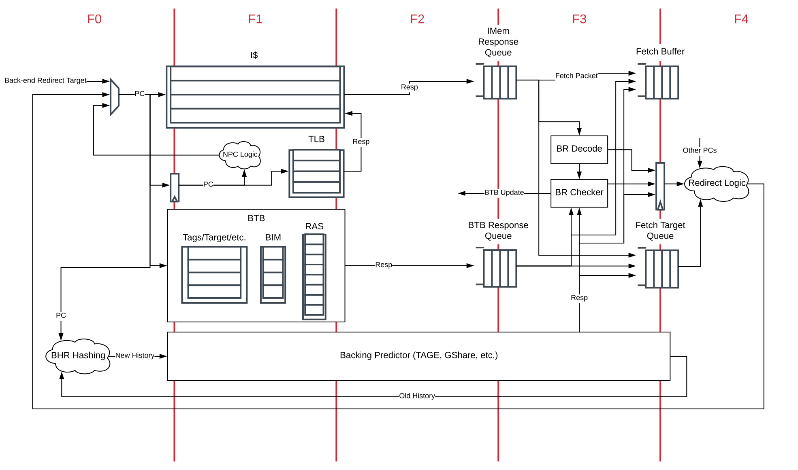

分岐予測¶

Fig. 6 The BOOM Front-end¶
この章では、BOOMがどのように分岐を予測し、その予測を解決するかについて説明します。
BOOMは、高速な Next-Line Predictor (NLP) と、より遅いが複雑な Backing Predictor (BPD) という2つのレベルの分岐予測を使用します 1 。 この場合、 NLP は、Branch Target Bufferで、 BPD は、GShare Predictorのようなより複雑な構造です。
Branch Prediction:
- 1
残念なことに、異なるタイプやレベルの分岐予測器を何と呼ぶかについて、文献の用語が少し混乱しています。 文献には、”マイクロBTB”と”BTB”、”NLP”と”BHT”、”キャッシュラインプレディクター”と”オーバーライドプレディクター”など、さまざまな構造に関する記述があります。 Rocketコアは独自の予測器を”BTB”と呼んでいますが、BOOMでは Next-Line Predictor (NLP) と呼び、 「次の行」をフェッチするためのシングルサイクル予測を提供する組み合わせ予測器であることを示しています。 また、Rocket BTBは単なる”ブランチターゲットバッファ”構造よりもはるかに複雑な構造を含んでいます。 同様に、 Backing Predictor (BPD)`という名称は、内部設計を過度に説明しないようにするために選ばれました (それは単純なBHTなのか？タグ付けされているのか？ `NLP をオーバーライドするのか？) 「もっといい名前があるよ！」という方は、お気軽にご連絡ください。